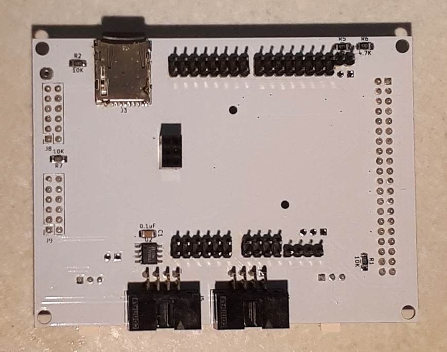

FPGA Based Theremin Project: : Cora Z7 Theremin Shield
This page describes design of theremin shield for Cora Z7
Connected to Cora Z7 board using Arduino/Chipkit connector.
Two on-board PMods of Cora board are left unused for future extensions.
Contains additional microSD card socket.
Used to connect other boards
- Theremin Pitch and Volume sensor oscillators
- TFT Touch Screen
- Encoders board
- Expression pedals board
- Audio I/O PMods: I2S2 and AMP3
Design
The purpose of Theremin Shield is intefacing between FPGA board and peripherials.
The only peripherial placed on shield is MicroSD card socket.
The rest of peripherials are being connected via various connectors.
Based on chosen hardware components, it's necessary to plan available FPGA board pin usage.

Waveshare 4.3" 800x480 TFT Capacitive Touch Screen
TFT Touch screen with RGB interface requires a lot of FPGA pins. Only RGB data needs 24 (8 * 3) pins.
To minimize FPGA board pins usage for TFT, it was decided to reduce color resolution of display from 8 to 4 bits per component. Lower 4 pins of each component are wired to upper 4 bits. This approach allows to keep full range 0x00..0xff of component values equally distributed with 0x11 step - instead of 0x00..0xf0 if it decided to set lower components to 0.
Although LCD Touch screen allows to control virtually any device features, often it's feasible to have hardware controls. There is Encoders board with 5 incremental encoders and one button. Multiplexing is used to reduce number of required pins from 16 to 5.
There are 6 single ended analog inputs (ADC) on Cora Arduino/Chipkit connectors. They can be used as analog inputs from pot based pedals (expression pedals).
Since there were several unused pins on FPGA board after assignment of main peripherial devices, I decided to add MicroSD Card on shield.
Display supports both FPC and IDC connectors. Both types of connectors are traced on shield PCB. Although, FPC/FCC connector is really hard to solder. Probably, it makes sense to use IDC.
LCD interface pin assignment: IDC40 connector (J1)
Please note: odd/even pins are mirrored comparing with Waveshare LCD pins assignment
| LCD pin header | Cora Z7 pin | Signal | Direction |
|---|---|---|---|
| Touch controller | |||
| 1 | IO41 | Touch IRQ | Input |
| 2 | 5V5 | +5V | Power Output |
| 3 | n/c | n/c | n/c |
| 4 | SDA | Touch I2C SDA | Bidirectional |
| 5 | SCL | Touch I2C SCL | Output |
| 6 | IO40 | Touch Reset | Output |
| Backlight control | |||
| 7 | IO5 | LCD Backlight PWM | Output |
| 8 | GND | GND | Power Output |
| 9 | n/c | n/c | n/c |
| 10 | n/c | n/c | n/c |
| Red data | |||
| 11 | IO13 | R0 = R4 | Output |
| 12 | IO39 | R1 = R5 | Output |
| 13 | IO12 | R2 = R6 | Output |
| 14 | IO38 | R3 = R7 | Output |
| 15 | IO13 | R4 | Output |
| 16 | IO39 | R5 | Output |
| 17 | IO12 | R6 | Output |
| 18 | IO38 | R7 | Output |
| Green data | |||
| 19 | IO11 | G0 = G4 | Output |
| 20 | IO37 | G1 = G5 | Output |
| 21 | IO10 | G2 = G6 | Output |
| 22 | IO36 | G3 = G7 | Output |
| 23 | IO11 | G4 | Output |
| 24 | IO37 | G5 | Output |
| 25 | IO10 | G6 | Output |
| 26 | IO36 | G7 | Output |
| Blue data | |||
| 27 | IO9 | B0 = B4 | Output |
| 28 | IO35 | B1 = B5 | Output |
| 29 | IO8 | B2 = B6 | Output |
| 30 | IO34 | B3 = B7 | Output |
| 31 | IO9 | B4 | Output |
| 32 | IO35 | B5 | Output |
| 33 | IO8 | B6 | Output |
| 34 | IO34 | B7 | Output |
| LCD clock and control signals | |||
| 35 | IO7 | PXCLK - pixel clock | Output |
| 36 | +3.3V via 10K R | DISP - display enable | Output |
| 37 | IO33 | HSYNC - horizontal sync | Output |
| 38 | IO6 | VSYNC - vertical sync | Output |
| 39 | IO32 | DE - data enable | Output |
| 20 | GND | GND | Power Output |
PMod adapters
PMod connectors for I2S2 and AMP3 PMods are made using custom pmod adapter boards - to place PMods above shield.
There are two audio PMODs used in this theremin design
- I2S2 pmod: Line In + Line Out: one stereo input and one stereo output
- AMP3 pmod: Phone Out Amplifier: one stereo output and I2C interface to control apmlifier parameters
I2S interface of both pmods reuse the same clocking signals: MCLK (master clock), WS(RLLK), SCLK(data clock)
I2S2 PMod uses 2 data pins - one for line in data, one for line out data
AMP3 PMod uses 1 data pin - out data to phones. Additionally it uses I2C interface for controlling.
PMod I2S2 connector (J8)
| I2S2 pmod pin | Cora Z7 pin | Signal | Direction |
|---|---|---|---|
| 1 | IO3 | Line Out MCLK = Line In MCLK | Output |
| 2 | IO29 | Line Out LRCK = Line In LRCK (WS) | Output |
| 3 | IO2 | Line Out SCLK = Line In SCLK | Output |
| 4 | IO28 | Line Out data | Output |
| 5 | GND | GND | Power Output |
| 6 | +3.3V | +3.3V | Power Output |
| 7 | IO3 | Line In MCLK = Line Out MCLK | Output |
| 8 | IO29 | Line In LRCK = Line Out LRCK (WS) | Output |
| 9 | IO2 | Line In SCLK = Line Out SCLK | Output |
| 10 | IO1 | Line In data | Input |
| 11 | GND | GND | Power Output |
| 12 | +3.3V | +3.3V | Power Output |
PMod AMP3 connector (J9)
| AMP3 pmod pin | Cora Z7 pin | Signal | Direction |
|---|---|---|---|
| 1 | IO29 | LRCK (WS) | Output |
| 2 | IO30 | out data | Output |
| 3 | n/c | n/c | n/c |
| 4 | IO2 | SCLK | Output |
| 5 | GND | GND | Power Output |
| 6 | +3.3V | +3.3V | Power Output |
| 7 | IO31 | I2C SDA | Bidirectional |
| 8 | IO4 | I2C SCL | Output |
| 9 | IO3 | MCLK | Output |
| 10 | +3.3V via 10K R | nSD | Output |
| 11 | GND | GND | Power Output |
| 12 | +3.3V | +3.3V | Power Output |
Oscillator connectors
To connect each of two oscillators it's necessary to use one input pin
Pitch oscillator connector (J7)
| Connector pin | Cora Z7 pin | Signal | Direction |
|---|---|---|---|
| 1 | GND | GND | Power Output |
| 2 | IO0 | Pitch oscillator signal | Input |
| 3 | +3.3V | +3.3V | Power output |
Volume oscillator connector (J6)
| Connector pin | Cora Z7 pin | Signal | Direction |
|---|---|---|---|
| 1 | GND | GND | Power Output |
| 2 | IO42 | Volume oscillator signal | Input |
| 3 | +3.3V | +3.3V | Power output |
Encoders board connector (J4)
Multiplexing is used to reduce number of used pins.
There are 5 incremental encoders with buttons and 1 tact button on Encoders board. They give 16 output signals.
To decrease number of used FPGA pins, multiplexing is used. Address A0..A3 selects signal to get value from. MUX out provides value of signal which index is set to A0..A3 pins.
Differencial ACD input pins are used as digital I/O for encoders board connection.
| Connector pin | Cora Z7 pin | Signal | Direction |
|---|---|---|---|
| 1 | A7 | MUX output | Input |
| 2 | n/c | n/c | n/c |
| 3 | A8 | A0 mux address | Output |
| 4 | A9 | A1 mux address | Output |
| 5 | A10 | A2 mux address | Output |
| 6 | A11 | A3 mux address | Output |
| 7 | +3.3V | +3.3V | Power output |
| 8 | GND | GND | Power Output |
Analog pedals board connector (J5)
Additional controlls may be connected using 6 on-board single-ended ADC analog input pins.
| Connector pin | Cora Z7 pin | Signal | Direction |
|---|---|---|---|
| 1 | A0 | Analog In 1 | Analog Input |
| 2 | A1 | Analog In 2 | Analog Input |
| 3 | A2 | Analog In 3 | Analog Input |
| 4 | A3 | Analog In 4 | Analog Input |
| 5 | A4 | Analog In 5 | Analog Input |
| 6 | A5 | Analog In 6 | Analog Input |
| 7 | +3.3V | +3.3V | Power output |
| 8 | GND | GND | Power Output |
MicroSD Card socket (J3)
MicroSD socket is traced on theremin shield PCB.
| uSD card pin | Cora Z7 pin | Signal | Direction |
|---|---|---|---|
| 1 | IO27 | DAT2 | Bidirectional |
| 2 | IO26 | DAT3/CD | Bidirectional |
| 3 | SPI SS | CMD | Bidirectional |
| 4 | +3.3V | +3.3V | Power Output |
| 5 | SPI SCLK | CCLK | Output |
| 6 | GND | GND | Power Output |
| 7 | SPI MISO | DAT0 | Bidirectional |
| 8 | SPI MOSI | DAT1 | Bidirectional |
| 9 | A6 | Card Detect B | Input |
| 10 | GND | Card Detect A | Power Output |
PCB design
Schematic and PCB are designed in KiCAD.
| Board | KiCAD Schematic | Gerber file |
|---|---|---|
| Cora Z7 Theremin Shield
Connected to Cora Z7 board using Arduino/Chipkit connector. 
|
 |

|

FPGA part
TBD
...